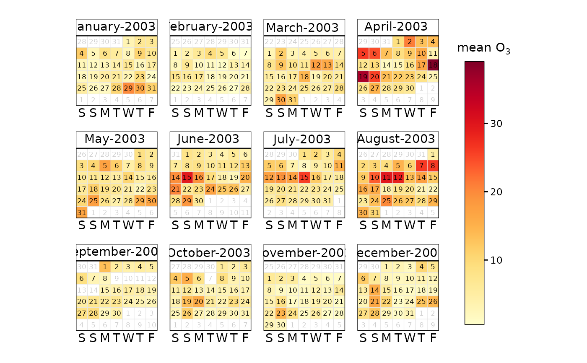
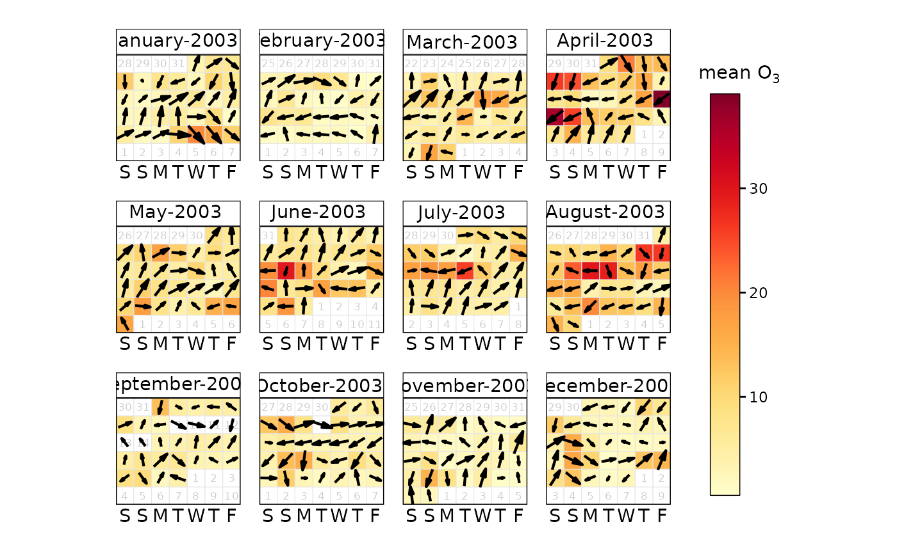

This function will plot data by month laid out in a conventional calendar format. The main purpose is to help rapidly visualise potentially complex data in a familiar way. Users can also choose to show daily mean wind vectors if wind speed and direction are available.
Usage
calendarPlot(
mydata,
pollutant = "nox",
year = NULL,
month = NULL,
type = "month",
statistic = "mean",
data.thresh = 0,
percentile = NA,
annotate = "date",
windflow = NULL,
cols = "heat",
limits = NULL,
lim = NULL,
col.lim = c("grey30", "black"),
col.na = "white",
font.lim = c(1, 2),
cex.lim = c(0.6, 0.9),
cex.date = 0.6,
digits = 0,
labels = NULL,
breaks = NULL,
w.shift = 0,
w.abbr.len = 1,
remove.empty = TRUE,
show.year = TRUE,
key.title = paste(statistic, pollutant, sep = " "),
key.position = "right",
strip.position = "top",
auto.text = TRUE,
plot = TRUE,
key = NULL,
...
)Arguments
- mydata
A data frame of time series. Must include a
datefield and at least one variable to plot.- pollutant
Mandatory. A pollutant name corresponding to a variable in a data frame should be supplied e.g.
pollutant = "nox".- year
Year to plot e.g.
year = 2003. If not supplied andmydatacontains more than one year, the first year of the data will be automatically selected. Manually settingyeartoNULLwill use all available years.- month
If only certain month are required. By default the function will plot an entire year even if months are missing. To only plot certain months use the
monthoption where month is a numeric 1:12 e.g.month = c(1, 12)to only plot January and December.- type
typedetermines how the data are split, i.e., conditioned, and then plotted. Only one type can be used with this function, as one faceting 'direction' is reserved by the month of the year. If a singletypeis given, it will form the "rows" of the resulting grid. Alternatively,c(type, "month")can be used can be specified fortypeto be used as the "columns" instead.type = "year"is a special case forcalendarPlot()and will automatically prevent a single year from being selected (unless specified using theyearargument) and setshow.yeartoFALSE.- statistic
Statistic passed to
timeAverage(). Note that ifstatistic %in% c("max", "min")andannotateis "ws" or "wd", the hour corresponding to the maximum/minimum concentration ofpolluantis used to provide the associatedwsorwdand not the maximum/minimum dailywsorwd.- data.thresh
The data capture threshold to use (%). A value of zero means that all available data will be used in a particular period regardless if of the number of values available. Conversely, a value of 100 will mean that all data will need to be present for the average to be calculated, else it is recorded as
NA. See alsointerval,start.dateandend.dateto see whether it is advisable to set these other options.- percentile
The percentile level in percent used when
statistic = "percentile"and when aggregating the data withavg.time. More than one percentile level is allowed fortype = "default"e.g.percentile = c(50, 95). Not used ifavg.time = "default".- annotate
This option controls what appears on each day of the calendar. Can be:
"date"— shows day of the month"value"— shows the daily mean value"none"— shows no label
- windflow
If
TRUE, the vector-averaged wind speed and direction will be plotted using arrows. Alternatively, can be a list of arguments to control the appearance of the arrows (colour, linewidth, alpha value, etc.). SeewindflowOpts()for details.- cols
Colours to use for plotting. Can be a pre-set palette (e.g.,
"turbo","viridis","tol","Dark2", etc.) or a user-defined vector of R colours (e.g.,c("yellow", "green", "blue", "black")- seecolours()for a full list) or hex-codes (e.g.,c("#30123B", "#9CF649", "#7A0403")). Alternatively, can be a list of arguments to control the colour palette more closely (e.g.,palette,direction,alpha, etc.). SeeopenColours()andcolourOpts()for more details.- limits
Use this option to manually set the colour scale limits. This is useful in the case when there is a need for two or more plots and a consistent scale is needed on each. Set the limits to cover the maximum range of the data for all plots of interest. For example, if one plot had data covering 0–60 and another 0–100, then set
limits = c(0, 100). Note that data will be ignored if outside the limits range.- lim
A threshold value to help differentiate values above and below
lim. It is used whenannotate = "value". See next few options for control over the labels used.- col.lim
For the annotation of concentration labels on each day. The first sets the colour of the text below
limand the second sets the colour of the text abovelim.- col.na
Colour to be used to show missing data.
- font.lim
For the annotation of concentration labels on each day. The first sets the font of the text below
limand the second sets the font of the text abovelim. Note that font = 1 is normal text and font = 2 is bold text.- cex.lim
For the annotation of concentration labels on each day. The first sets the size of the text below
limand the second sets the size of the text abovelim.- cex.date
The base size of the annotation text for the date.
- digits
The number of digits used to display concentration values when
annotate = "value".- breaks, labels
If a categorical colour scale is required,
breaksshould be specified. This can be either of:A single value, which will divide the scale into
breakslevels using the same logic ascutData(). For example,breaks = 5will split the scale into five quantiles.A numeric vector, which will define the specific breakpoints. For example,
c(0, 50, 100)will bin the data into0 to 50,50 to 100, and so on. Ifbreaksdoes not cover the full range of the data, the outer limits will be extended so that the full colour scale is covered while retaining the desired number of breaks.
By default,
breakswill generate nicely formatted labels for each category. Thelabelsargument overrides this - for example, a user could definebreaks = 3, labels = c("low", "medium", "high"). Care should be taken to provide the appropriate number oflabels- it should be equal tobreaksif a single value is given, or equal tolength(breaks)-1ifbreaksis a vector.- w.shift
Controls the order of the days of the week. By default the plot shows Saturday first (
w.shift = 0). To change this so that it starts on a Monday for example, setw.shift = 2, and so on.- w.abbr.len
The default (
1) abbreviates the days of the week to a single letter (e.g., in English, S/S/M/T/W/T/F).w.abbr.lendefines the number of letters to abbreviate until. For example,w.abbr.len = 3will abbreviate "Monday" to "Mon".- remove.empty
Should months with no data present be removed? Default is
TRUE.- show.year
If only a single year is being plotted, should the calendar labels include the year label?
TRUEcreates labels like "January-2000",FALSElabels just as "January". If multiple years of data are detected, this option is forced to beTRUE.- key.title
Used to set the title of the legend. The legend title is passed to
quickText()ifauto.text = TRUE.- key.position
Location where the legend is to be placed. Allowed arguments include
"top","right","bottom","left"and"none", the last of which removes the legend entirely.- strip.position
Location where the facet 'strips' are located when using
type. When onetypeis provided, can be one of"left","right","bottom"or"top". When twotypes are provided, this argument defines whether the strips are "switched" and can take either"x","y", or"both". For example,"x"will switch the 'top' strip locations to the bottom of the plot.- auto.text
Either
TRUE(default) orFALSE. IfTRUEtitles and axis labels will automatically try and format pollutant names and units properly, e.g., by subscripting the "2" in "NO2". Passed toquickText().- plot
When
openairplots are created they are automatically printed to the active graphics device.plot = FALSEdeactivates this behaviour. This may be useful when the plot data is of more interest, or the plot is required to appear later (e.g., later in a Quarto document, or to be saved to a file).- key
Deprecated; please use
key.position. IfFALSE, setskey.positionto"none".- ...
Addition options are passed on to
cutData()fortypehandling. Some additional arguments are also available, varying somewhat in different plotting functions:title,subtitle,caption,tag,xlabandylabcontrol the plot title, subtitle, caption, tag, x-axis label and y-axis label. All of these are passed through toquickText()ifauto.text = TRUE.xlim,ylimandlimitscontrol the limits of the x-axis, y-axis and colorbar scales.ncolandnrowset the number of columns and rows in a faceted plot.fontsizeoverrides the overall font size of the plot by setting thetextargument ofggplot2::theme(). It may also be applied proportionately to anyopenairannotations (e.g., N/E/S/W labels on polar coordinate plots).Various graphical parameters are also supported:
linewidth,linetype,shape,size,border, andalpha. Not all parameters apply to all plots. These can take a single value, or a vector of multiple values - e.g.,shape = c(1, 2)- which will be recycled to the length of values needed.lineend,linejoinandlinemitretweak the appearance of line plots; seeggplot2::geom_line()for more information.In polar coordinate plots,
annotate = FALSEwill remove the N/E/S/W labels and any other annotations.
Value
an openair object
Details
calendarPlot() will plot data in a conventional calendar format, i.e., by
month and day of the week. Daily statistics are calculated using
timeAverage(), which by default will calculate the daily mean
concentration.
If wind direction is available it is then possible to plot the wind direction
vector on each day. This is very useful for getting a feel for the
meteorological conditions that affect pollutant concentrations. Note that if
hourly or higher time resolution are supplied, then calendarPlot() will
calculate daily averages using timeAverage(), which ensures that wind
directions are vector-averaged.
If wind speed is also available, then setting the option annotate = "ws"
will plot the wind vectors whose length is scaled to the wind speed. Thus
information on the daily mean wind speed and direction are available.
It is also possible to plot categorical scales. This is useful where, for
example, an air quality index defines concentrations as bands, e.g., "good",
"poor". In these cases users must supply labels and corresponding breaks.
Note that is is possible to pre-calculate concentrations in some way before
passing the data to calendarPlot(). For example rollingMean() could be
used to calculate rolling 8-hour mean concentrations. The data can then be
passed to calendarPlot() and statistic = "max" chosen, which will plot
maximum daily 8-hour mean concentrations.
See also
Other time series and trend functions:
TheilSen(),
smoothTrend(),
timePlot(),
timeProp(),
timeVariation()
Examples
# basic plot
calendarPlot(mydata, pollutant = "o3", year = 2003)

# show wind vectors
calendarPlot(mydata, pollutant = "o3", year = 2003, annotate = "wd")
#> Warning: ! `annotate` in `openair::calendarPlot()` no longer supports `'ws'` or `'wd'`.
#> ℹ Please use the `windflow` argument instead for more thorough control over the
#> apperance of the 'windflow' arrow.
#> ℹ Setting `windflow` to TRUE.

if (FALSE) { # \dontrun{
# show wind vectors scaled by wind speed and different colours
calendarPlot(mydata,
pollutant = "o3", year = 2003, annotate = "ws",
cols = "heat"
)
# show only specific months with selectByDate
calendarPlot(selectByDate(mydata, month = c(3, 6, 10), year = 2003),
pollutant = "o3", year = 2003, annotate = "ws", cols = "heat"
)
# categorical scale example
calendarPlot(mydata,
pollutant = "no2", breaks = c(0, 50, 100, 150, 1000),
labels = c("Very low", "Low", "High", "Very High"),
cols = c("lightblue", "green", "yellow", "red"), statistic = "max"
)
# UK daily air quality index
pm10.breaks <- c(0, 17, 34, 50, 59, 67, 75, 84, 92, 100, 1000)
calendarPlot(
mydata,
"pm10",
year = 1999,
breaks = pm10.breaks,
labels = c(1:10),
cols = "daqi",
statistic = "mean",
key.title = "PM10 DAQI"
)
} # }